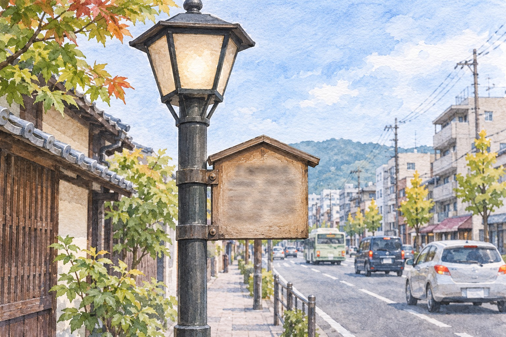
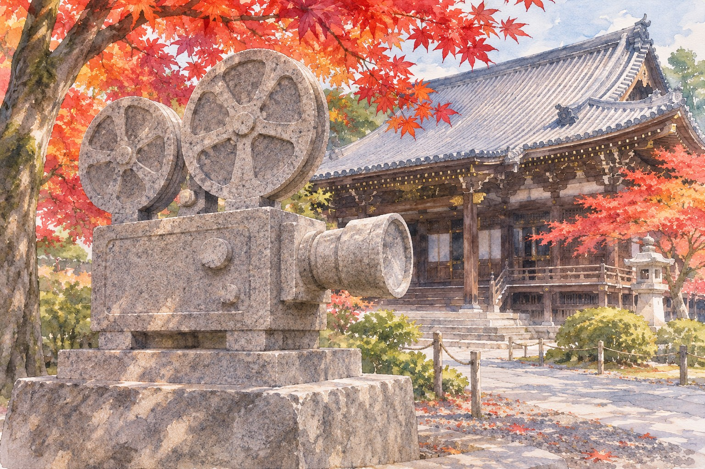
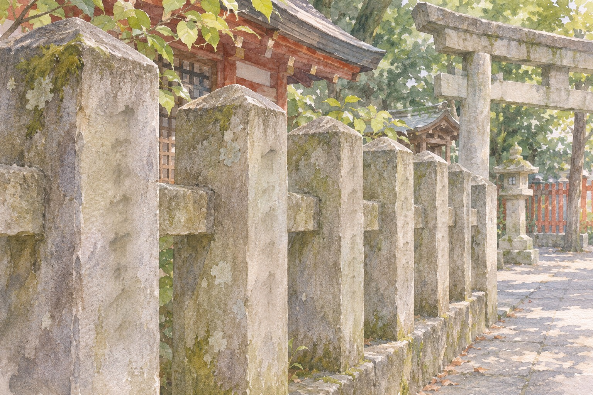
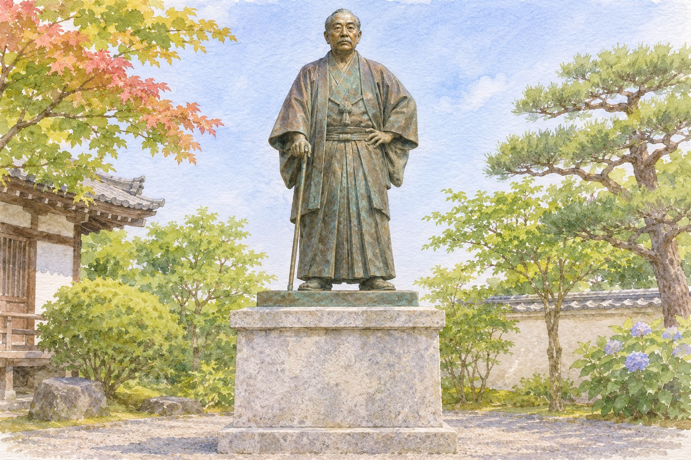

Kyoto's studio town in Uzumasa is the second chapter. The first was a theatre on Senbon-dōri, a temple on a hill above Okazaki, and a Zen garden in Kinugasa, all run by one man who made more than 300 films and died in 1929.
If you have been to the Toei Kyoto Studio Park, or walked the streets around Uzumasa where the film companies settled, you have seen the industry Kyoto became famous for. It did not start there. It started about four kilometres north-east, with a puppet-theatre chanter's son who ran a playhouse in the weaving district of Nishijin and, in 1908, was asked to point a camera at his own actors.
His name was Makino Shōzō (牧野省三, 1878–1929). Japanese film history calls him the father of Japanese film. In English he gets a paragraph on a city information page. What follows is a way to walk his Kyoto in one day: a plaque on a lamp post, a monument shaped like a projector, a stone fence with his name on it, and a bronze statue standing over the place his studio used to be.
The trade-off is plain. None of these places is a museum. There is no footage to watch: the 1908 film is lost. What you get is the order things happened in, and four places that make sense only once you know it.
A theatre family in Nishijin千本座 · Senbon-za
Makino was born in Kyoto on 22 September 1878. His mother, Makino Yana (牧野彌奈), was a performer of gidayū (義太夫), the chanted narration of the puppet theatre, and she ran a theatre near Kitano. She trained her son in gidayū from childhood. By his twenties he was running his own playhouse, the Senbon-za (千本座), on Senbon-dōri in Nishijin, working there as a kyōgen-kata, the backstage hand who keeps a performance moving: cues, scripts, stage business.
That job is the key to everything after. A kyōgen-kata knows how to get actors on and off, how to cut a long play into scenes, and how to keep an audience watching. When a film distributor named Yokota Einosuke (横田永之助), later president of Nikkatsu, wanted Japanese-made films to show, he did not need a cameraman so much as someone who could stage a story fast. Yokota paid. Makino did all the production.
The Senbon-za is gone without trace. Kyoto City's film office notes a single plaque marking the site, fixed to a street lamp on the east side of Senbon-dōri, just north of Ichijō-dōri.

AI-generated illustration — not an on-site photograph. An imagined scene inspired by this section, not an accurate depiction of the real place, objects or event.
Where: East side of Senbon-dōri, a short way north of Ichijō-dōri (上京区泰童片原町). Look at the lamp posts, not the buildings.
Getting there: City Bus 203 to Senbon Imadegawa (千本今出川), then walk south down Senbon-dōri.
When: Any time; it is a public street. Daylight makes the plaque easier to read.
Reality check: It is a plaque on a lamp post on a busy road. The exact wording on it could not be confirmed for this piece.
The films came in a 21-year burst; the markers you can visit were put up 28, 37 and 79 years after his death.
The hill where the first period film was shot真如堂 · Shinnyodō
In 1908 Makino took actors from the Senbon-za to Shinnyodō (真如堂), formally Shinshō Gokuraku-ji (真正極楽寺), a Tendai temple on a low hill above Okazaki, and filmed Honnōji Kassen (本能寺合戦), the story of the warlord Oda Nobunaga's death. Kyoto's film office calls it Japan's first story film and first jidaigeki, the samurai period drama. No print survives. A promotional flyer does.
Why a temple? A playhouse is dark and a 1908 camera needed daylight. A temple yard gave him sunlight, a big wooden building that already looked like the sixteenth century, and space for a fight. Every period drama shot in Kyoto since has made the same calculation.
In 2008, a hundred years on, Kyoto City and a group of film people put up a monument in the precinct, the Kyoto Birthplace of Film monument (京都・映画誕生の碑), shaped like an early cinematograph and carrying the city's declaration of a century of film-making. Its exact position in the grounds is not given in any source checked for this piece, so ask.
At the temple office, or to anyone sweeping the yard: 映画誕生の碑はどこですか (eiga tanjō no hi wa doko desu ka).
The reason to go now is that Shinnyodō is also a maple temple, and November is its season. The peak is usually late November into early December. The temple has published its autumn 2026 schedule, and it changes what you pay and what you can see:
Dates (2026)
What's on
Cost
1–17 Nov
Special display of the Kangyō Mandala (観経曼荼羅) in the main hall
Main hall and garden ¥1,000
8 Nov
No garden viewing
—
15 Nov
Ojūya (お十夜) service; normal viewing replaced by a special worship before the hidden Amida, shown once a year
Check on the day
18 Nov – 7 Dec
Maple season
¥500 just to enter the grounds, plus ¥500 for the main hall and shoin
Getting there: Kyoto Station (京都駅) → City Bus 5, 17 or 100, about 40 min, to Kinrin Shako-mae (錦林車庫前), then about 8 min on foot. The temple itself advises against the Shinnyodō-mae stop: the walk up from it is steep.
When: Hours are not posted on the official site; travel listings give 9:00–16:00 with last entry 15:45. Check before you go.
Reality check: Outside the maple window the grounds are free; from 18 November they are not. Commercial and cosplay shoots are banned, which is a little funny given why you came.

AI-generated illustration — not an on-site photograph. An imagined scene inspired by this section, not an accurate depiction of the real place, objects or event.
A fence with the founders' names大将軍八神社 · Daishōgun Hachi Jinja
In 1909 Makino saw a travelling actor, Onoe Matsunosuke (尾上松之助), and put him on film in Goban Tadanobu (碁盤忠信). Onoe became what Japanese film history calls its first star, and the pair made films at a rate that is hard to believe now. In 1910 they had a studio of about 990 square metres with a sixteen-mat stage near Nijō Castle; it lasted about a year. By around 1918 Nikkatsu's Daishōgun studio was running in Kita-ku, on Ichijō-dōri.
None of those studios left a mark. What did is a run of stone tamagaki (玉垣), the fence posts beside a shrine gate that carry donors' names, at Daishōgun Hachi Jinja (大将軍八神社) on Ichijō-dōri, south of Kitano Tenmangū. Kyoto City's film office records Makino's and Onoe's names among them. The film men of the 1910s paid for shrine fences the way the Uzumasa stars later did at Sankichi Inari.
Getting there: From the Senbon-za plaque, walk west along Ichijō-dōri. The shrine faces the street.
When: The fence is outside, by the torii; daylight hours.
Reality check: There is no sign pointing out the film names. Read the posts beside the torii one by one; the names are carved in kanji: 牧野省三, 尾上松之助.

AI-generated illustration — not an on-site photograph. An imagined scene inspired by this section, not an accurate depiction of the real place, objects or event.
Not to scale. Three of the sites sit within a short walk of each other on the west side; Shinnyodō is the outlier across the river.
The statue over the studio等持院 · Tōji-in
In 1921 Makino left Nikkatsu and set up on his own, opening a studio for Makino Kyōiku Eiga (牧野教育映画製作所) in the grounds of Tōji-in (等持院), the Zen temple in Kinugasa that served as the Ashikaga shoguns' family temple. Through the 1920s the Tōji-in studio launched the next generation of sword-fight stars: Bandō Tsumasaburō (阪東妻三郎), Ichikawa Utaemon (市川右太衛門) and Kataoka Chiezō (片岡千恵蔵). His count by the end was more than 300 films, some dictionaries say about 350. He died in 1929.
In 1957 a society of his admirers put up a bronze statue, the Makino Shōzō Sensei-zō (マキノ省三先生像), past the temple gate, facing south, with his achievements cut into the base. Below it, to the south, is where the studio stood. It is houses now. The Makino family grave is in the precinct too, and it includes his son Makino Masahiro (マキノ雅弘), who became a prolific director himself and founded Shochiku's talkie studio in Uzumasa in 1935, which is where the Uzumasa story begins.
Stand next to the statue and look south over the rooftops. That view, a temple on a slope with flat ground below it, is the whole logic of the early Kyoto studios: the temple for scenery, the flat ground for a stage.
If you can't find it, at the reception window: マキノ省三の像はどこですか (makino shōzō no zō wa doko desu ka).
Getting there: Randen Kitano Line to Tōji-in Ritsumeikan Univ. Kinugasa Campus-mae Station (等持院・立命館大学衣笠キャンパス前駅), about 5 min on foot. Or City Bus 10 or 26 to Tōji-in Minami-machi (等持院南町), about 8 min on foot.
When: Travel listings give 9:00–16:30, reception until 16:00.
Reality check: The temple revised its admission fee at the end of 2023 and the new amount could not be confirmed; older listings say ¥600. The garden is the paid part. Check at the gate whether you can see the statue without going in.

AI-generated illustration — not an on-site photograph. An imagined scene inspired by this section, not an accurate depiction of the real place, objects or event.
The star, by the river尾上松之助像 · Onoe Matsunosuke bust
Onoe has his own memorial, a bronze bust in Aoi Park (葵公園), the strip of the Kamo riverside park just north of Demachiyanagi, put up in 1966 under the governor Ninagawa Torazō. Kyoto Prefecture's page on it gives the reason, and it is not his films: in 1925 Onoe gave money for welfare housing for poor families, remembered as the Matsunosuke Shusse Nagaya (松之助出世長屋). The prefecture remembers him as a donor first and an actor second.
Getting there: Keihan or Eizan Railway to Demachiyanagi Station (出町柳駅), then a few minutes' walk north into the park.
When: It is an outdoor park; any daylight hour.
Reality check: It is a bust in a park. Combine it with the bus change at Demachiyanagi rather than making a trip for it.
Walking east to west also walks the story forward: one bus line and one tram link all four stops.
The honest part
There is nothing to watch. Honnōji Kassen is lost, and so are most of the films of these years. If you want to see what Makino and Onoe looked like on screen, that has to happen before or after this walk, not during it.
Two of the four stops are small. A plaque on a lamp post on Senbon-dōri and names on a shrine fence take a minute each, and both are easy to walk past. Without the story they are nothing; that is the point of reading this first, and also a fair reason to skip them if you are short of time.
Shinnyodō in late November is not a quiet temple. It is quieter than the big maple names on the other side of the hill, but from 18 November you pay to enter the grounds and you will not be alone. If you care more about the film monument than the leaves, go in the first half of November, avoiding the 8th and 15th, when the schedule changes.
Some things could not be checked: the plaque's exact words, where in the Shinnyodō precinct the monument stands, Tōji-in's current fee. They are flagged above. Ask on the spot rather than trust an old listing.
If you only have one day
A weekday in mid-November, east to west, which is also the order the films were made.
Kyoto Station, City Bus 5 towards Ginkakuji. Get off at Kinrin Shako-mae (錦林車庫前), about 40 minutes.
Walk up to Shinnyodō. Find the projector-shaped monument first, then the main hall and maples.
Back at Kinrin Shako-mae, City Bus 203 heading for Demachiyanagi (出町柳) and Kitano. Get off at Demachiyanagi Ekimae.
Walk north into Aoi Park for the Onoe bust. Lunch around Demachiyanagi.
Bus 203 again, west along Imadegawa-dōri to Senbon Imadegawa (千本今出川).
Walk south on Senbon-dōri, east side, past Ichijō-dōri's corner: the Senbon-za plaque. Then west along Ichijō-dōri to Daishōgun Hachi Jinja and read the fence posts.
Walk to Kitano-Hakubaichō Station (北野白梅町駅) and take the Randen one stop to Tōji-in.
Tōji-in: the statue, the view south over the studio site, the Makino grave. Reception closes at 16:00 by the listings.
Randen onwards to Uzumasa and the later chapter, or back to Kitano-Hakubaichō for buses into town.
Running late? Drop Aoi Park and stay on bus 203 all the way to Senbon Imadegawa. Do not drop Tōji-in; it closes first.